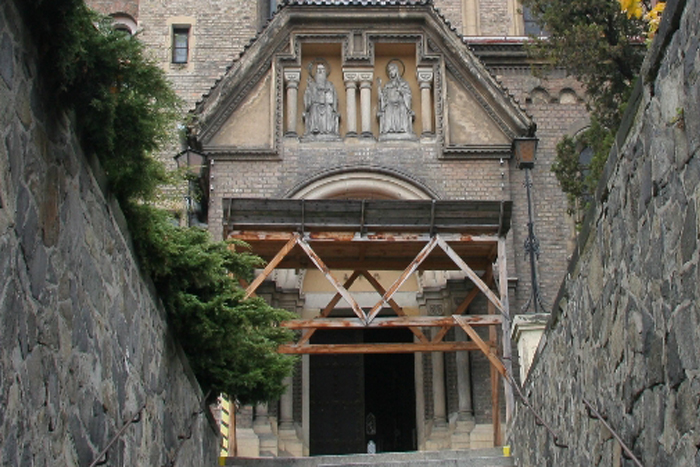

<?php
	$tabulka = true;

	require ('_include/php/zaklad.php');

	titulek ('Beuronské umìní - opatství sv. Gabriela');

	menu ('Jít dovnitø','gabriel-dovnitr.html');
	menu ('Jít doleva','gabriel-levo-01.html');
	menu ('Jít doprava','gabriel-pravo-01.html');
	menu ('Otoèit se','gabriel-zpet.html');

	zahlavi ();
?>



<br />
<p style="text-align:center">
	Nyní máte mo¾nost obejít budovu nebo vstoupit dovnitø.
</p>
<?php
  zapati ();
?>
